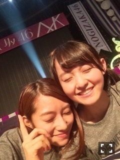
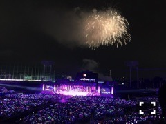
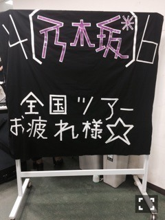
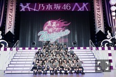

| 2015/09 01 Tue | 伊藤万理華 踊る雨。663回目 |
13枚目、引き続き
選抜入りしました。
ここまでフォーメーションが
動いたのは初めてではありますが、
内側だけでした。
3列目に残れた、と考えるか
解釈はそれぞれですが
また選ばれたというのを
より一層噛み締めて、
責任を持っていかないといけません。
また、いつ変わるか、
何が起こるかわからない。
ポジションに関しては
与えられた場所でどんな場所でも
全力でやり切りたい。
前に立てるくらいの
強い気持ちは持っていたいです。
私は、11、12枚目と活動してから
自分を表現できる場が増え
以前思ってた時とはまた違った
気持ちも大きくなりました。
なかなかうまくいかなかったのは
自分に責任があります。
それでも、今までにない
チャンスをたくさんもらってきて、
少しずつだけど、私らしさを
見てもらえるようになりました。
夢だった仕事ができるようになって、
そんなところが好きだ
と言ってくれる人が増えました。
まだ知られてないし、
好きになれないという人にも
少しでも自分が伝わればいいな
と思っています！
だから、曲げません。
明確な目標も見えてきました。
それは、
たくさんの人と出逢い、
作品を残すこと。
乃木坂46にいる限り、
私はこのグループの為に
大きくなりたいと思っています。
多方面で引っ張ってくれている
メンバーと同じくらいに
自分にしかできないところを
つくって、発信して、繋げたい。
大きな何かを残したい。
私はたぶん、
このグループじゃなかったら
みなさんがいなかったら
今の自分をうまく出せていません。
乃木坂46は私に合っています。
これらは全部、
自信がついてきたから言えること。
応援してくれる人の存在が
自分に自信が与えてくれます。
結成から4年経って、
昨日で真夏の全国ツアーも終わり、
みなさんの存在が今まで以上に
大きく感じました。
今回周った6都市16公演の
あの景色の中歌って踊って、
グループの勢いを体感しました。
私はまだまだだ。
自覚を持つこと。
代表者として前に立つ覚悟を
持たなければいけない。

神宮球場2days
1日目は雨でした。
雨の中のライブは初めてだったけど
いいな！って思った！
雨だからこそ生まれる
会場の一体感、水しぶき、
キラキラ光る照明。
髪の毛ぐしゃぐしゃだったけど、
ダンスパートともマッチしてて！
雨の中何時間も待ってくださった
お客さんへ感謝の気持ちで
いっぱいです。

千秋楽は小雨が降ったりもしたけど、
最後には空も味方にしました。
どちらも天気に負けないくらいの
盛り上がりと一体感。
夜空の下のカラフルなペンライト。
いくちゃんのピアノと、
オーケストラに乗せて歌った3曲。
悲しみの忘れ方の打ち上げ花火。
スカパーで見ていた方にも
伝わったかな？
Wアンコールがくるとは
思いませんでした。
少しずつ大きくなっていく声を
裏で聞いていて、
このツアーの集大成を
見せることができたんだと実感。
来てくれたみなさん
ありがとうございました。
一緒に頑張ってきたメンバー、
そして、スタッフのみなさん、
本当にありがとうございました。
ステージ裏も、愛で溢れていました。
毎公演、階段に素敵なメッセージ
ありがとうございました。
大好きです。

乃木坂らしさって
これがすべてじゃないかもしれない。
でも、ひとつ形にして
みなさんに観せることが
できてよかった。
個々でいろんな場所で活躍している、
そんなみんなが集まった
乃木坂46でありたい。
みんなばらばら、だから良い。
アンコールで
新曲を初披露しました！
◆13thシングル
「今、話したい誰かがいる」
10月28日リリースです！
9月19日ロードショーの
映画『心が叫びたがってるんだ。』
の主題歌に決定しました。
決定と知る前からずっと観ようと
思ってた作品なのでびっくりです...！
この映画を通して
たくさんの方に聴いてほしいな。
そして、新たな舞台が始まります。
◆『すべての犬は天国へ行く』
10月1日〜10月12日(7、9日は除く)
AiiA 2.5 Theater Tokyo
メンバー8人で出演します。
新たな一面を見せられるように
頑張ります（≧∇≦）
いつも応援してくれてありがとう。
これからも
応援よろしくお願いします！

今年の夏も
最高の思い出をありがとう！
まりか